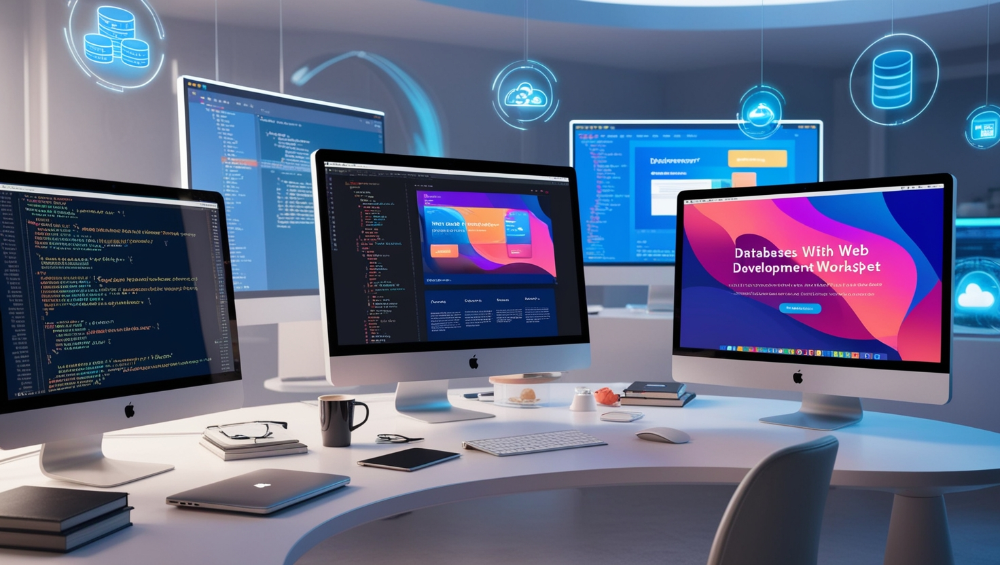
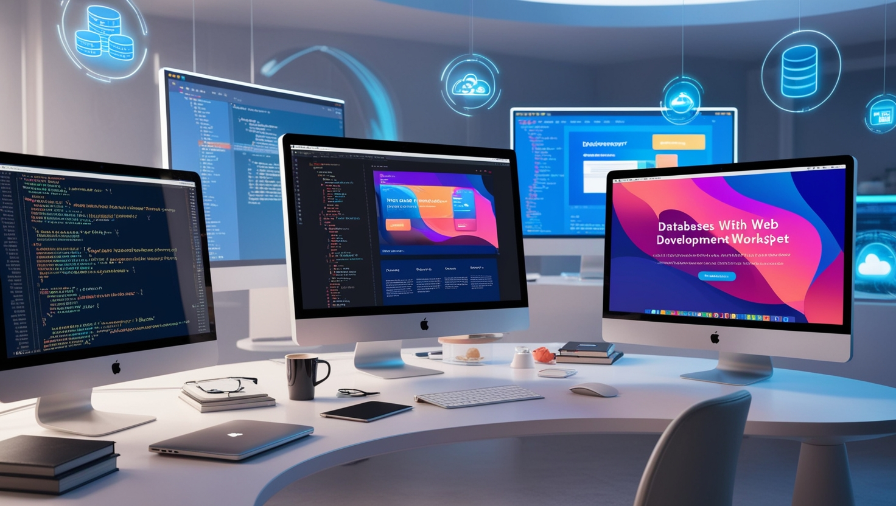

Web Development
Overview
Web development refers to the process of creating and maintaining websites.It involves various tasks, from building the site’s structure and content to implementing advanced features and ensuring the site works smoothly.
Web development can range from building a simple static page to creating complex dynamic web applications with interactive features. This field is crucial for businesses, organizations,
and individuals aiming to establish an online presence. It involves a blend of coding, design, and problem-solving to create functional and visually appealing web pages.
Front-End Development
The front end of a website refers to everything that users see and interact with.Front-end development focuses on building the visual and interactive elements of a website. It uses languages like HTML, CSS, and JavaScript to structure the content, design the layout, and add functionality.
HTML (HyperText Markup Language) is used for creating the structure of web pages, while CSS (Cascading Style Sheets) controls the presentation, such as colors, fonts, and layout. JavaScript is used to make the website interactive by adding dynamic content, such as forms, animations, and live data updates.
Back-End Development
Back-end development involves working on the server-side of a website,which is responsible for managing and storing data, ensuring security, and supporting the functionality of the site. Back-end developers work with databases, servers, and application programming interfaces (APIs). Languages such as PHP, Ruby, Python, Java, and Node.js are commonly used for back-end development.
These languages interact with databases like MySQL, PostgreSQL, and MongoDB to store and retrieve data. Back-end developers also work on the logic and algorithms that power the site's functionality, ensuring it works efficiently.
Full-Stack Development
A full-stack developer is proficient in both front-end and back-end development. Full-stack development allows a developer to work on all layers of a web application, from the user interface to the server-side logic. Full-stack developers need to be skilled in multiple technologies and frameworks to ensure smooth integration between the front-end and back-end. This role has become highly sought after due to the versatility it offers in web development projects.Web Development Frameworks
Web development frameworks are collections of pre-written code that simplify the development process by providing structure and tools for building websites and applications. For front-end development, frameworks like React, Angular, and Vue.js are popular choices. On the back-end, frameworks such as Django (Python), Ruby on Rails (Ruby), and Express (Node.js) are widely used. These frameworks provide developers with standardized solutions for common tasks, making development faster and more efficient.Responsive Web Design
Responsive web design ensures that a website functions well across a variety of devices and screen sizes, from desktop computers to mobile phones. This approach is critical because of the growing number of users accessing the web on smartphones and tablets. Techniques such as flexible grids, media queries, and responsive images are used to create layouts that adapt to different screen sizes. A responsive design improves user experience and can positively impact a website’s search engine ranking.Web Accessibility
Web accessibility refers to designing and developing websites that are usable by all individuals, including those with disabilities. This includes ensuring that websites are navigable with screen readers, that color contrasts are sufficient, and that content is presented in an accessible format. Accessibility is essential for creating an inclusive web environment. Developers can use tools like WAVE and Lighthouse to evaluate and improve a website’s accessibility.User Experience (UX) and User Interface (UI) Design
UX and UI design play a significant role in web development. While UI (User Interface) design focuses on the layout, visuals, and interactivity of the website, UX (User Experience) design concerns the overall experience of the user when interacting with the site. A good UX/UI design ensures that a website is not only aesthetically pleasing but also easy to navigate, intuitive, and user-friendly. Successful web development requires collaboration between developers, designers, and stakeholders to achieve an optimal user experience.Content Management Systems (CMS)
Content Management Systems (CMS) are tools that allow individuals to create, manage, and modify digital content without needing technical knowledge. Popular CMS platforms like WordPress, Joomla, and Drupal are used by millions of websites globally. These platforms offer themes, plugins, and other customizable features that make web development more accessible to non-developers, while still providing developers with flexibility to create custom solutions.Web Security
Web security is a critical aspect of web development that focuses on protecting websites and applications from cyber threats. Developers need to implement various security measures, such as encryption, secure sockets layer (SSL) certificates, and user authentication, to safeguard sensitive data. Common security vulnerabilities like SQL injection, cross-site scripting (XSS), and cross-site request forgery (CSRF) must be addressed to prevent attacks and ensure the safety of the users.Search Engine Optimization (SEO)
Search Engine Optimization (SEO) is the process of improving a website’s visibility on search engines like Google. SEO involves optimizing various elements of a website, such as page titles, meta descriptions, headings, and content, to increase its chances of ranking higher in search results. SEO also considers technical aspects such as website speed, mobile-friendliness, and URL structure. Effective SEO strategies are crucial for driving organic traffic to a website.Progressive Web Apps (PWAs)
Progressive Web Apps (PWAs) are web applications that offer a native mobile app-like experience while still functioning in a web browser. PWAs combine the best features of websites and mobile apps, such as offline functionality, push notifications, and fast loading speeds. PWAs are designed to work on any device and provide a smooth, engaging user experience. They are an emerging trend in web development, as they allow businesses to reach users across different platforms without developing separate native apps.Web Hosting and Deployment
Web hosting and deployment are the final steps in the web development process. Web hosting involves storing the files and data of a website on a server so that it can be accessed on the internet. Deployment refers to the process of making a website or application live by transferring the code to a hosting platform. There are many web hosting services available, such as shared hosting, dedicated hosting, and cloud hosting, each offering different levels of performance and scalability.Web Development Trends
Web development is constantly evolving, and staying up-to-date with the latest trends is crucial for developers. Some of the current trends in web development include the use of artificial intelligence (AI) and machine learning for personalized user experiences, voice search optimization, and the growing adoption of WebAssembly for faster, more efficient websites. Additionally, low-code and no-code development platforms are gaining popularity, allowing non-developers to create and manage websites with minimal coding knowledge.The Role of APIs in Web Development
APIs (Application Programming Interfaces) are essential tools in web development that allow different software applications to communicate with each other. APIs enable developers to integrate third-party services, such as payment gateways, social media platforms, and data feeds, into their websites. They allow for a more modular approach to development, as developers can use pre-built functionality instead of reinventing the wheel. RESTful APIs and GraphQL are two popular types used in modern web development.APIs (Application Programming Interfaces) are essential tools in web development that allow different software applications to communicate with each other. APIs enable developers to integrate third-party services, such as payment gateways, social media platforms, and data feeds, into their websites. They allow for a more modular approach to development, as developers can use pre-built functionality instead of reinventing the wheel. RESTful APIs and GraphQL are two popular types used in modern web development.Version Control and Collaboration
Version control systems like Git are crucial for web development, especially when working in teams. Version control allows developers to track changes to code, collaborate on projects, and revert to previous versions if necessary. Platforms like GitHub and GitLab provide online repositories for developers to store and manage their code, making it easier to collaborate and share code with others. Effective version control practices help streamline the development process and prevent errors in the codebase.Testing and Debugging
Testing and debugging are essential components of web development to ensure that a website functions as intended. There are various types of testing, including unit testing, integration testing, and user acceptance testing (UAT). Developers use debugging tools and techniques to identify and fix errors in the code. Automated testing frameworks, such as Selenium and Jest, are commonly used to perform repetitive tests and ensure the quality of the web application.Mobile Web Development
With the increasing use of smartphones and tablets, mobile web development has become a significant focus in web development. Mobile web development ensures that websites are optimized for smaller screens and touch-based navigation. Responsive design techniques, as well as mobile-first design strategies, are commonly employed to create mobile-friendly websites. Additionally, Progressive Web Apps (PWAs) have become an essential tool for offering native-like experiences on mobile devices without requiring separate native apps.Future of Web Development
The future of web development is promising, with continuous advancements in technologies such as artificial intelligence, machine learning, and blockchain. These technologies are set to enhance user experiences and improve web application functionality. Moreover, web development practices will continue to prioritize mobile-first, responsive, and inclusive design. As the digital world evolves, web developers will need to adapt to new challenges and opportunities, ensuring that websites and applications meet the ever-growing demands of users and businesses. Get Started


 
